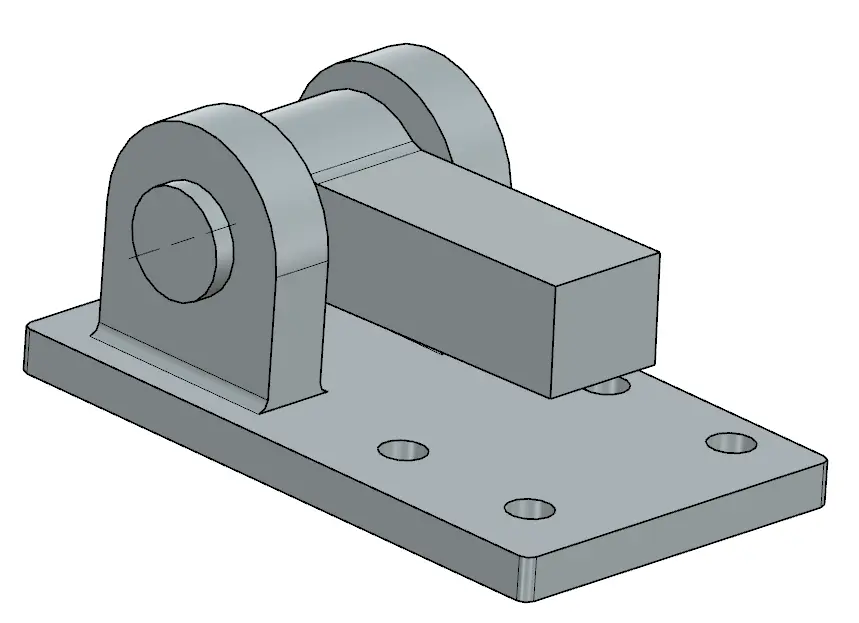
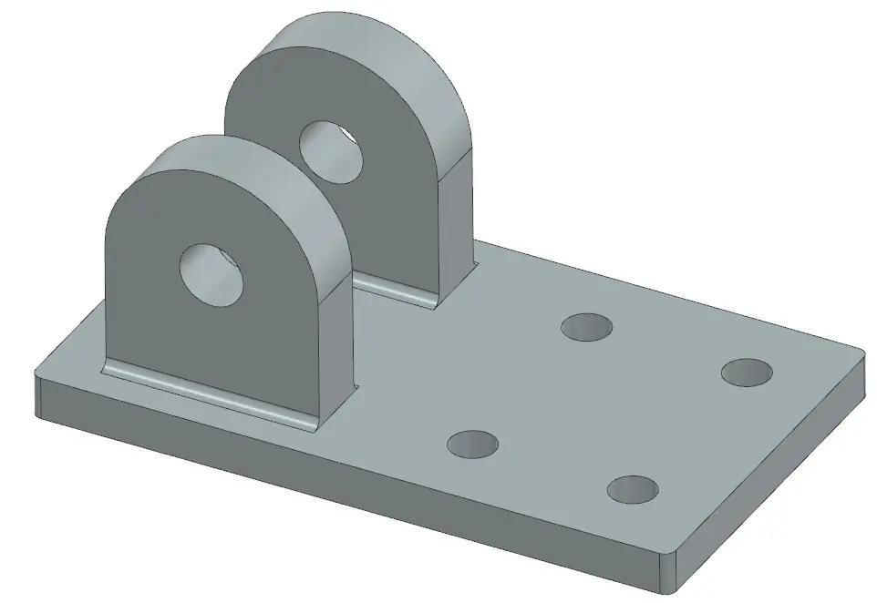
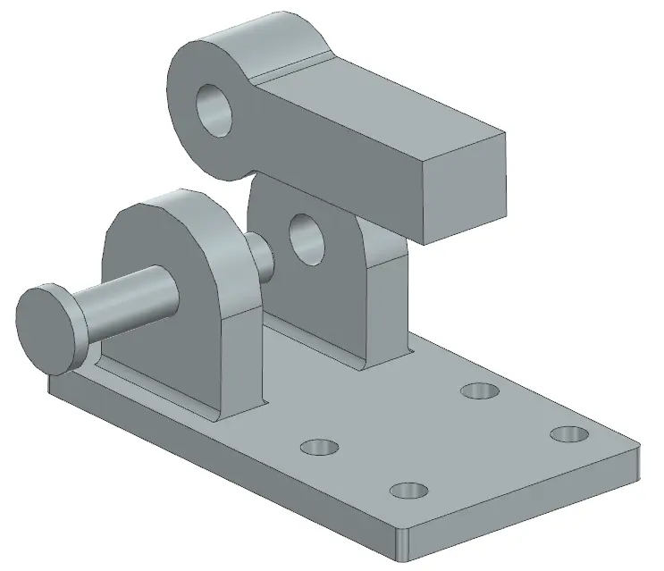
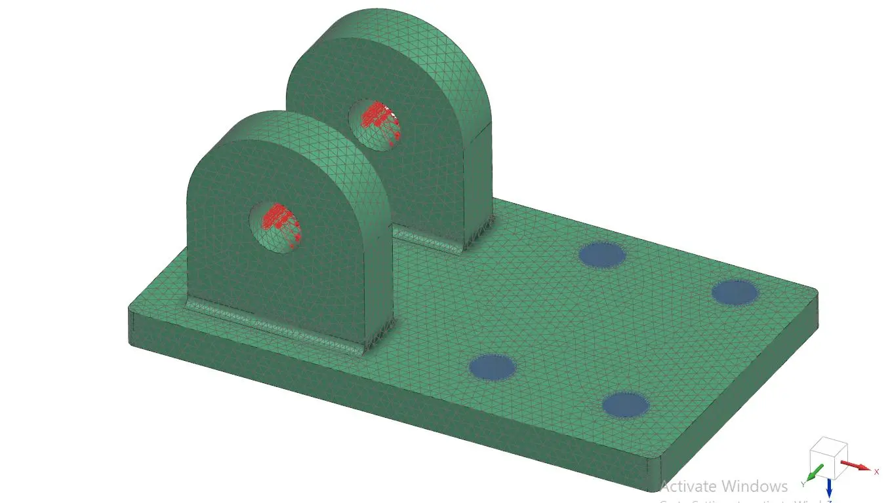
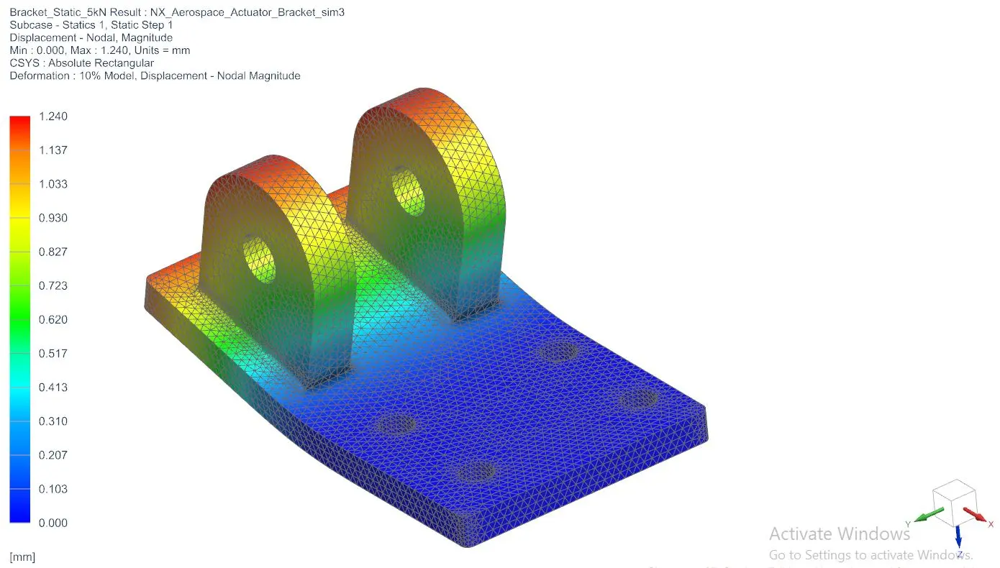
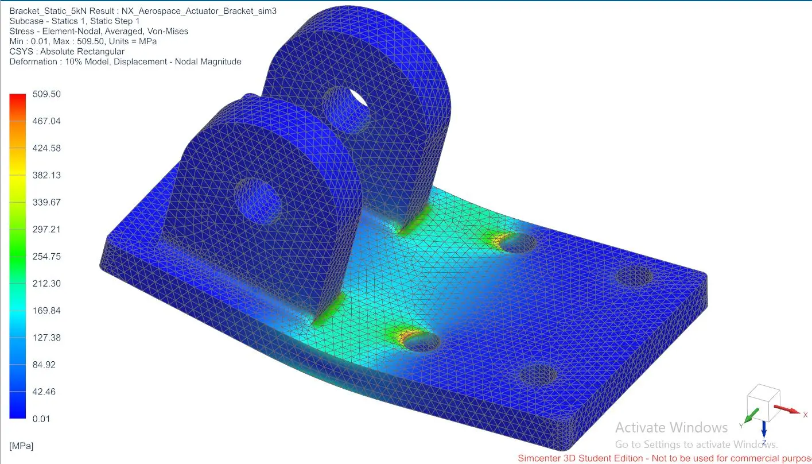
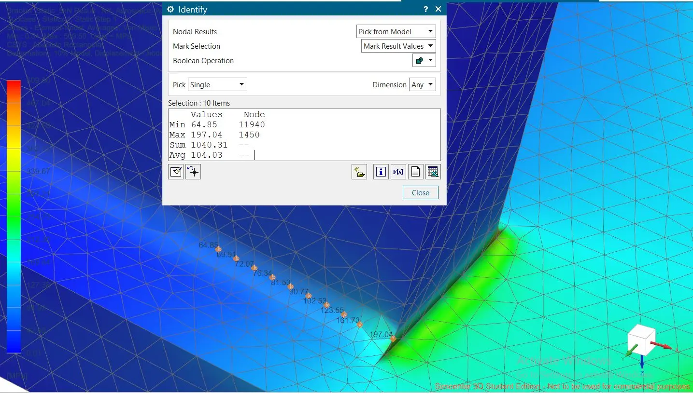
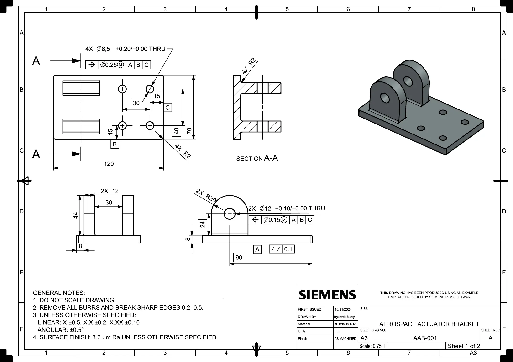
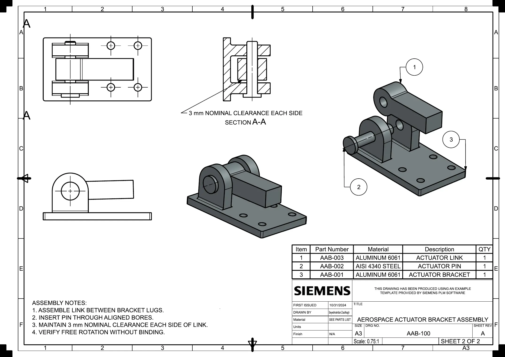

Parametric CAD
Modelled the bracket, actuator link, and headed pin with controlled dimensions, repeated features, fillets, and material assignments.
Mechanical design · FEA · GD&T
An end-to-end mechanical design study developed in Siemens NX: parametric part modelling, constrained assembly, preliminary static assessment, and a two-sheet manufacturing and assembly drawing package.

Overview
The objective was to build a compact clevis-style bracket that transfers actuator load through a removable pin while mounting to a supporting structure through four base holes.
I used the project to practise the complete mechanical-development chain: creating design-intent-driven geometry, controlling component motion in an assembly, checking the load path with finite-element analysis, and communicating manufacturing intent with datums, tolerances, GD&T, a bill of materials, and associative balloons.
My contribution
Modelled the bracket, actuator link, and headed pin with controlled dimensions, repeated features, fillets, and material assignments.
Applied concentric and seating constraints while preserving the intended rotational degree of freedom about the pivot axis.
Prepared manufacturing and assembly sheets with datums, position tolerances, BOM attributes, section views, balloons, and assembly notes.
CAD development
The bracket uses two 12 mm lugs separated by a 30 mm gap. A 24 mm-wide link leaves 3 mm nominal clearance on each side, while the removable pin defines the rotational joint.


Aluminum 6061 · 120 × 70 × 8 mm base · two Ø12 mm pivot bores
AISI 4340 steel · Ø11.8 mm shaft · headed removable joint
Aluminum 6061 · 24 mm joint width · Ø12.2 mm bore
Finite-element setup
The bracket was assessed separately using a SOL 101 linear-static solution. The setup was intentionally simple and is presented with its limitations.

Results

Maximum displacement
1.240 mmThe largest motion occurs at the upper lug region, consistent with bending of the bracket away from the constrained base.

Global averaged von Mises peak
509.5 MPaThe global peak is concentrated near an idealized fixed mounting boundary and is treated as constraint-driven localization, not a design allowable.
Mesh refinement
The global displacement changed by only 0.004 mm from the coarsest to the finest mesh.
Engineering interpretation

Manufacturing documentation
The detail sheet defines the bracket geometry and datum reference frame. The assembly sheet connects the component geometry to the BOM, exploded view, clearance requirement, and assembly sequence.


Project file